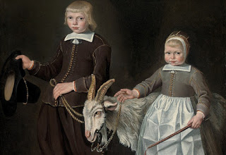

Temurah 2 - Sacrifice Exchange
One may decide to exchange his sacrifice for another , a better or a worse one, pronouncing "let this animal become a sacrifice instead of that one." This is forbidden by the Torah, but his words take effect: the second animal becomes sanctified, although the first one still remains a sacrifice. In addition, he violates a negative commandment, and is subject to lashes. Therefore, we have the first ruling: "All can effect exchange, a man or a woman, but this is not a permission to do so, rather, if he did it, it's done, and he is liable to lashes."
Earlier we surveyed the use of " All do this and that " to show that the word "all" adds something not obvious. What does "All can effect exchange" add? It adds an heir who inherits a sacrifice of his father and who can effect exchange with that sacrifice (and get lashes for that). Then why is it not taught explicitly? Because it is not unanimous, and Rabbi Yehudah disagrees and says that just as the heir does not lean on the sacrifice, so too he cannot effect exchange. And Rabbi Meir (the author of all anonymous rulings)? - He agrees to the comparison, but the word "exchange" is said twice to include an heir.
Art: Follower of Jacob Gerritsz Cuyp - Double Portrait of Children, With a Goat